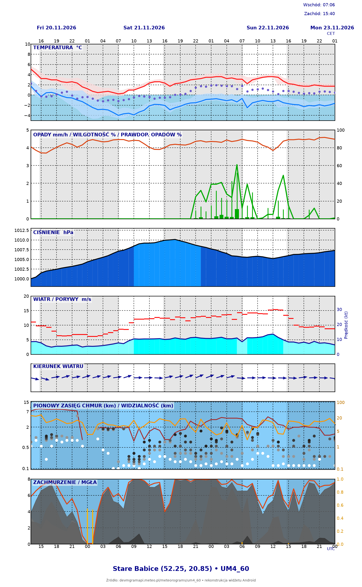
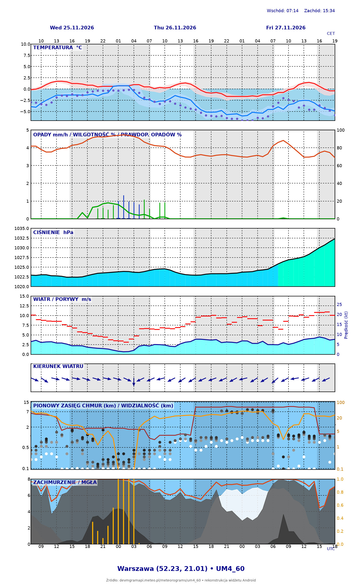
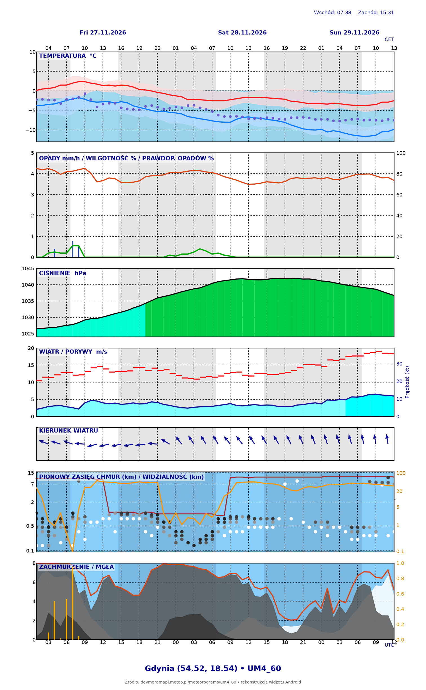
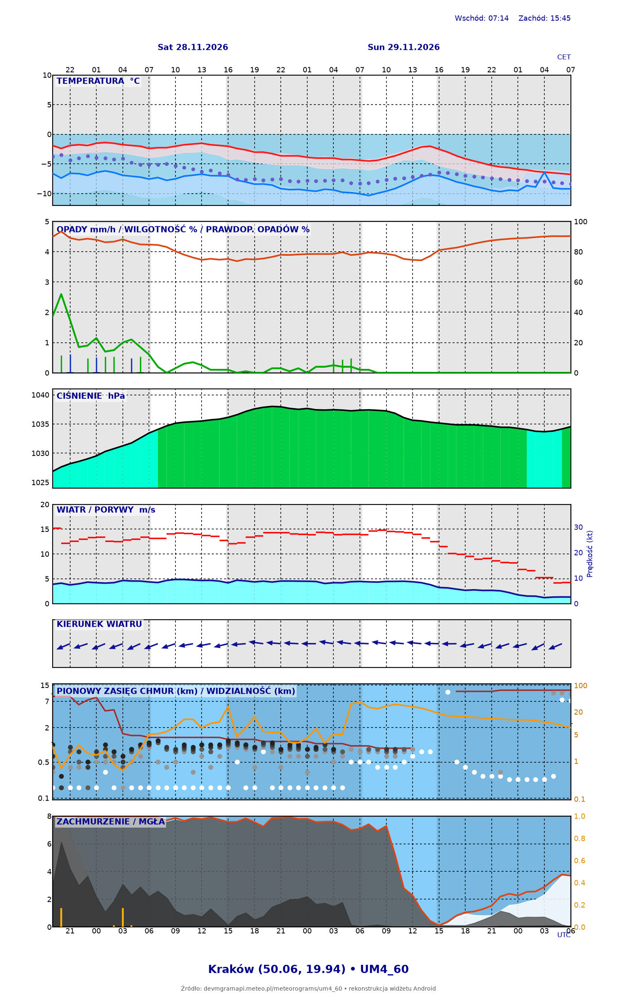

Oczekiwanie na pierwszą aktualizację
Wykresy zostaną opublikowane automatycznie przez prywatne repozytorium meteo-generator po pierwszym pomyślnym uruchomieniu GitHub Actions.
Aktualne pliki będą dostępne poniżej. Jeśli obraz jeszcze się nie wyświetla, pierwsza publikacja nie została zakończona.
Stare Babice

Warszawa

Gdynia

Kraków
